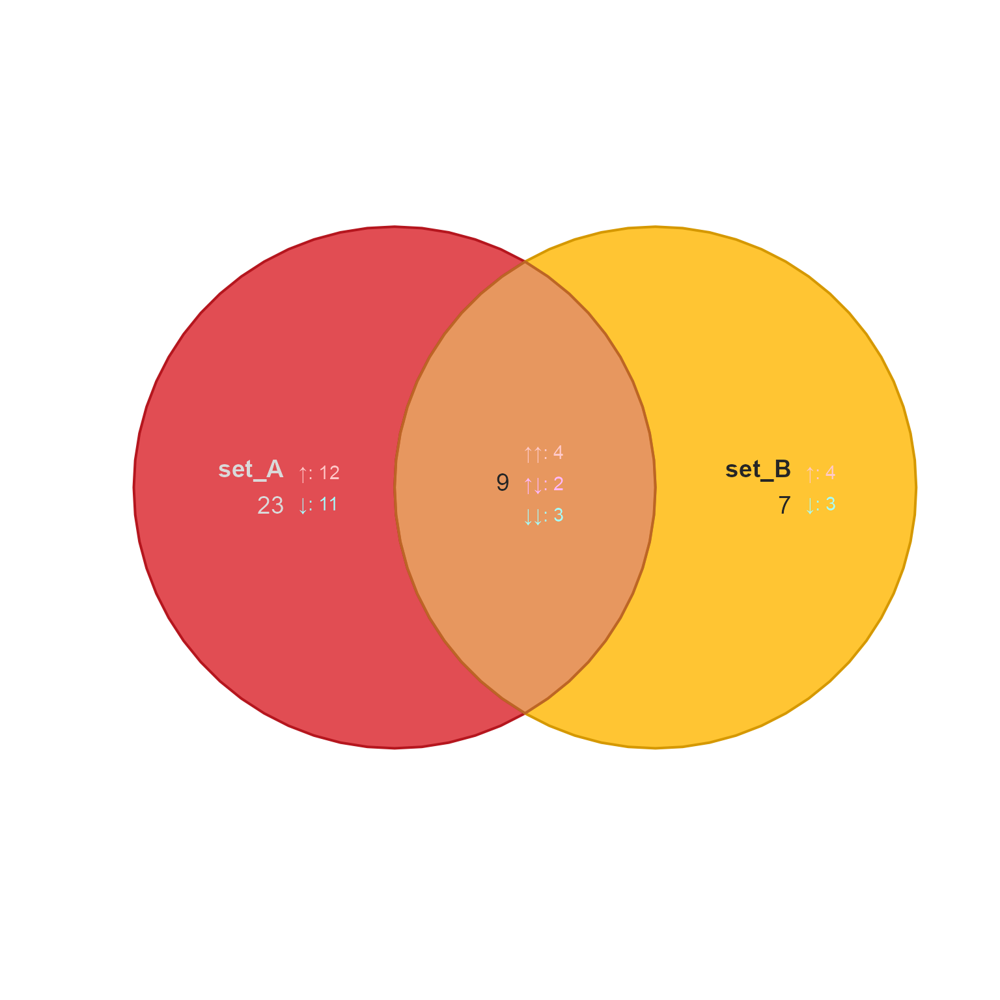
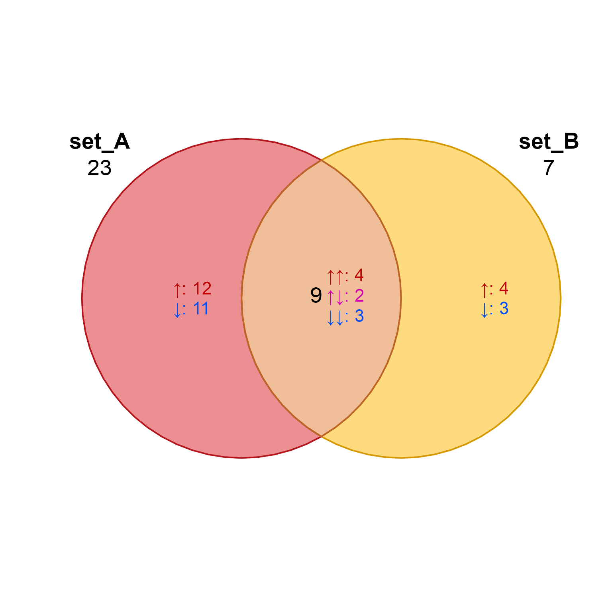
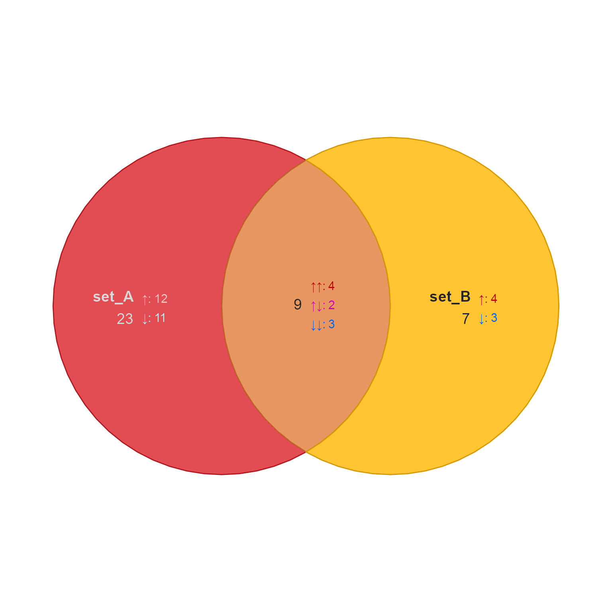
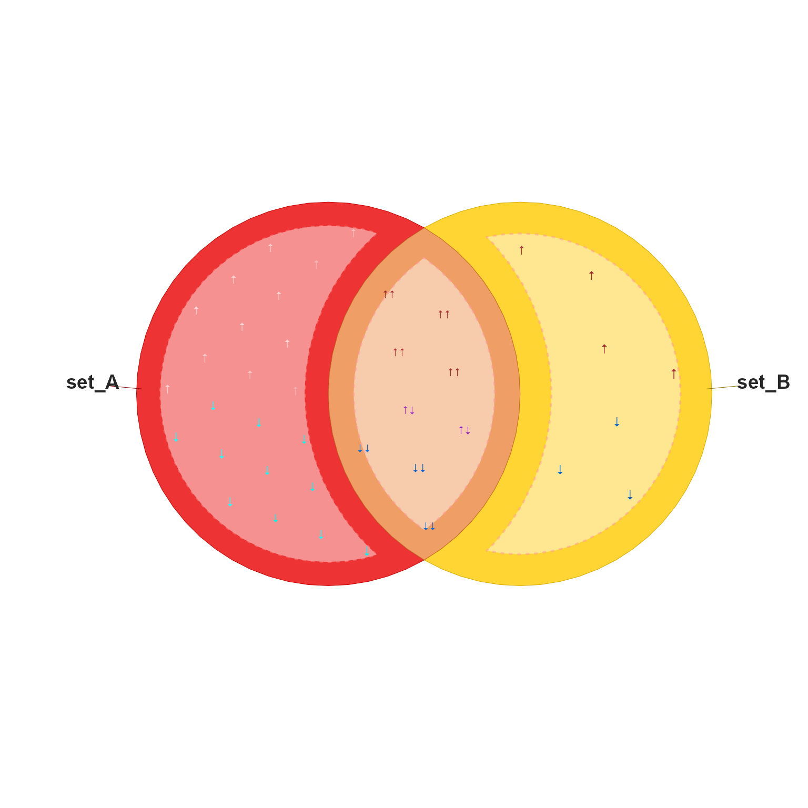
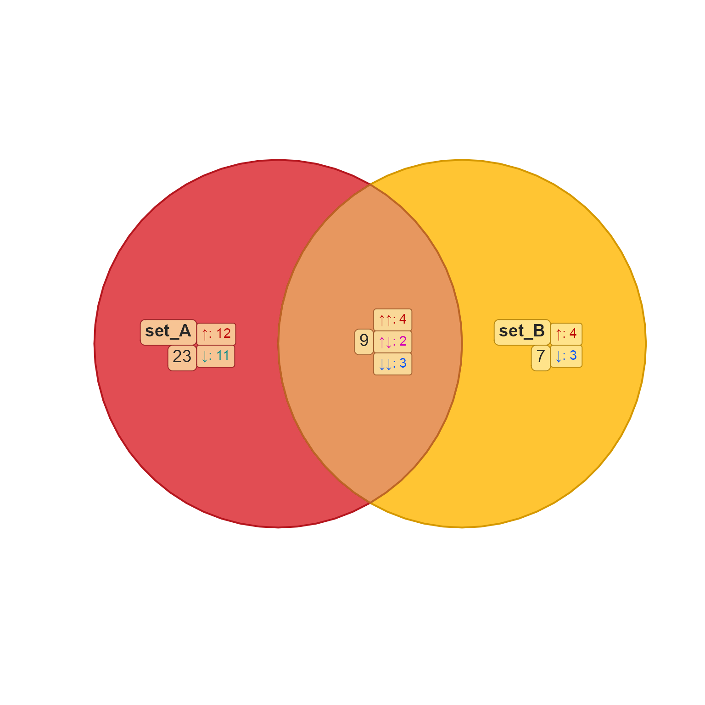
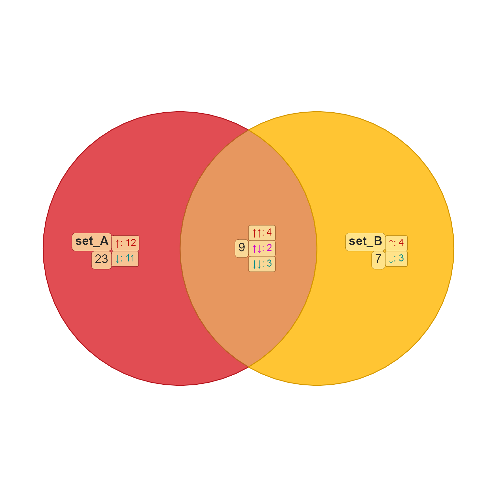
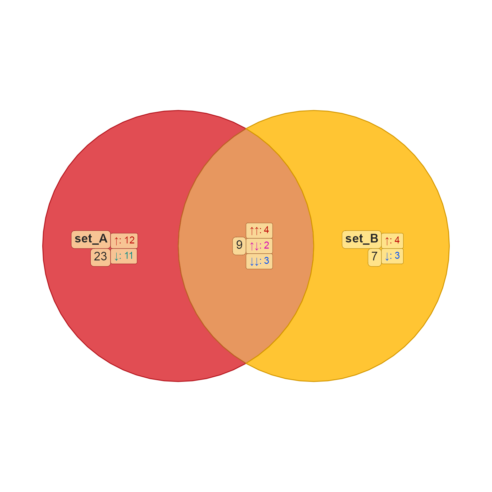
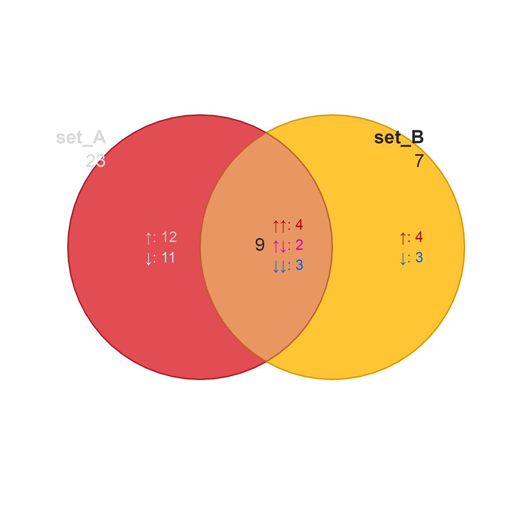
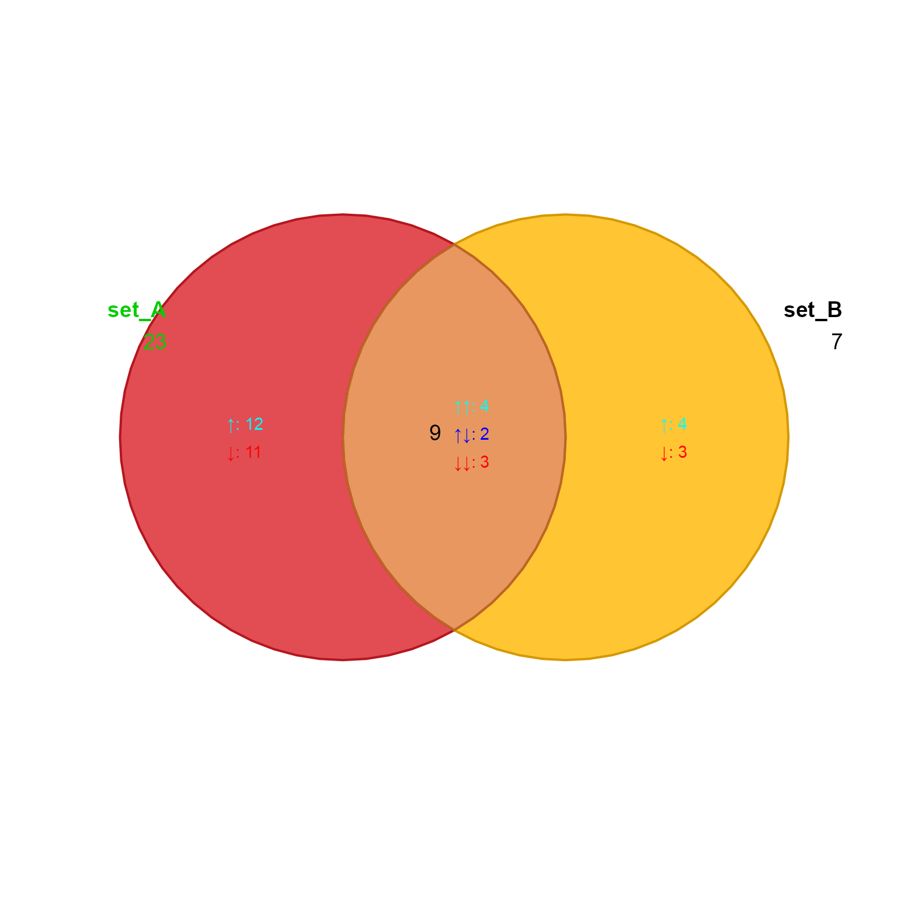
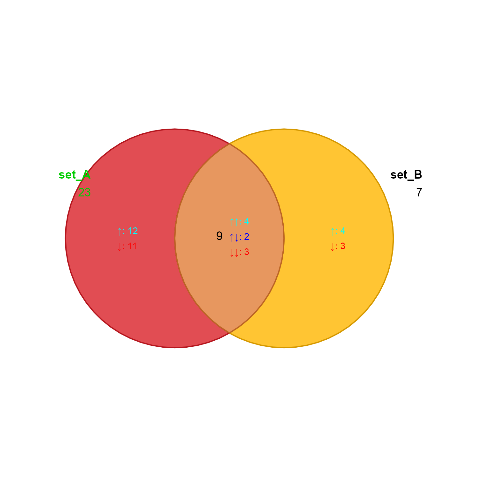

Render Venn or Euler diagram
render_venndir(
venndir_output = NULL,
venn_spdf = NULL,
label_df = NULL,
asp = 1,
xlim = NULL,
ylim = NULL,
expand_fraction = 0,
xpd = NA,
font_cex = 1,
item_cex = 0.9,
plot_warning = TRUE,
show_label = NA,
show_items = c(NA, "none", "sign item", "item", "sign"),
show_zero = TRUE,
show_segments = TRUE,
item_degrees = -18,
display_counts = TRUE,
max_items = 100,
label_style = c("custom", "basic", "fill", "shaded", "shaded_box", "lite", "lite_box"),
fontfamily = "Arial",
segment_buffer = -0.2,
inside_percent_threshold = 5,
plot_style = c("base", "gg"),
group_labels = TRUE,
ggtheme = ggplot2::theme_void,
draw_buffer = FALSE,
...
)
Arguments
| venndir_output |
list object produced by venndir() with
at least two elements: "venn_spdf" which is a
sp::SpatialPolygonsDataFrame; and label_df which is
a data.frame. See argument descriptions below for the
requirements of each object.
|
| venn_spdf |
sp::SpatialPolygonsDataFrame that contains
one polygon for each displayed overlap set. This object is
expected to contain colnames:
"color" with fill color;
"alpha" with transparency optionally applied to "color";
"border" with border color, where NA draws no border;
"lwd" with line width; and "lty" with line type. Only
"color" is required, the others are filled with defaults
as needed.
|
| label_df |
data.frame that contains these required
colnames:
"x" with x coordinate for each label,
"y" with y coordinate for each label,
"text" with the label to be displayed, in any
format compatible with gridtext::richtext_grob().
Optional colnames are filled with defaults as needed:
"show_label" a logical vector for which labels to show [TRUE];
"show_items" a logical indicating whether to show item labels [FALSE];
"vjust", "hjust" vertical/horizontal position [0.5, 0.5];
"halign" with horizontal alignment [0.5];
"rot" label rotation [0];
"color" label color [black];
"fontsize" fontsize used by grid::par() [14];
"border" border color, where NA draws no border [NA];
"lty", "lwd" line type and line width [1, 1];
"fill" label background fill, where NA draws no background fill [NA];
"padding", "padding_unit" passed to gridtext::richtext_grob()
to define padding around each label [2, "pt"];
"r", "r_unit" passed to gridtext::richtext_grob() to define
rounded corners, relevant only when "border" or "fill" are
not NA [2, "pt"].
"item_cex" cex adjustment for item labels
"show_label" logical indicating whether to show each label
"show_items" logical indicating whether to show items
|
| asp |
numeric value indicating the aspect ratio, passed
to plot(). The default asp=1 ensures that circles are
always drawn with correct aspect ratio so they are displayed
as proper circles.
|
| xlim, ylim |
numeric range for x- and y-axis, respectively.
When xlim or ylim are NULL, values are derived from the
coordinates from venn_spdf and label_df.
|
| xpd |
see graphics::par(), when xpd=FALSE it clips text
labels and polygons to the plot boundary; when xpd=TRUE it
clips to the figure region, and when xpd=NA it is clipped
to the full device region. This option is mainly helpful
as xpd=NA ensures labels are displayed even when they overlap
the plot boundary. |
| plot_warning |
logical indicating whether to draw a text
label on the bottom of the plot whenever a non-zero overlap
count cannot be displayed given the label_df data. This
occurs when a proportional Venn (Euler) diagram does not
or cannot represent every possible overlap, causing some
overlaps to be hidden from the plot.
|
| label_style |
character string indicating the style of label
to display. The values "basic","none","shaded","lite","fill"
style the label background fill, while presence of "box" in
the string will draw a border around the label:
"basic" or "none" uses no background fill,
"lite" uses lite background fill,
"fill" uses opaque fill with the overlap set color,
"shaded" uses slightly transparent fill with overlap set color,
"box" displays border around the label.
|
| fontfamily |
character string indicating the font family,
which can be useful if Unicode characters are displayed as empty
boxes instead of proper Unicode characters. This value may be
device-dependent, for example fonts available for PDF output
may differ from those for PNG.
|
| inside_percent_threshold |
numeric value indicating the percent
threshold, below which a polygon label is moved outside the polygon
by default. The threshold is calculated by area of the polygon
divided by total area of the enclosing polygon, multiplied by 100.
Therefore inside_percent_threshold=5 will require a polygon to
represent at least 5 percent of the total area.
|
| plot_style |
character string indicating the style
of plot: "base" uses base R graphics; "gg" uses
ggplot2 graphics (not yet implemented).
|
| group_labels |
logical to enable experimental feature that
groups multiple gridtext::richtext_grob() elements together
by overlap set and position, currently only implemented
(partially) for base R plots.
|
| ... |
additional arguments are passed to plot()
when plotting venn_spdf which is expected to be a
sp::SpatialPolygonsDataFrame. |
Details
This function is intended to render a Venn or Euler diagram
directly from the output of venndir() to allow customization
of various aspects of the figure.
See also
Examples

render_venndir(venndir_output, plot_style="gg");



render_venndir(vo, show_set="all",
label_style="lite_box",
show_items="sign item", draw_buffer=TRUE, buffer_w=0.3)

render_venndir(vo, plot_style="gg", show_set="all",
label_style="lite_box",
show_items="sign item", draw_buffer=TRUE, buffer_w=0.3)




